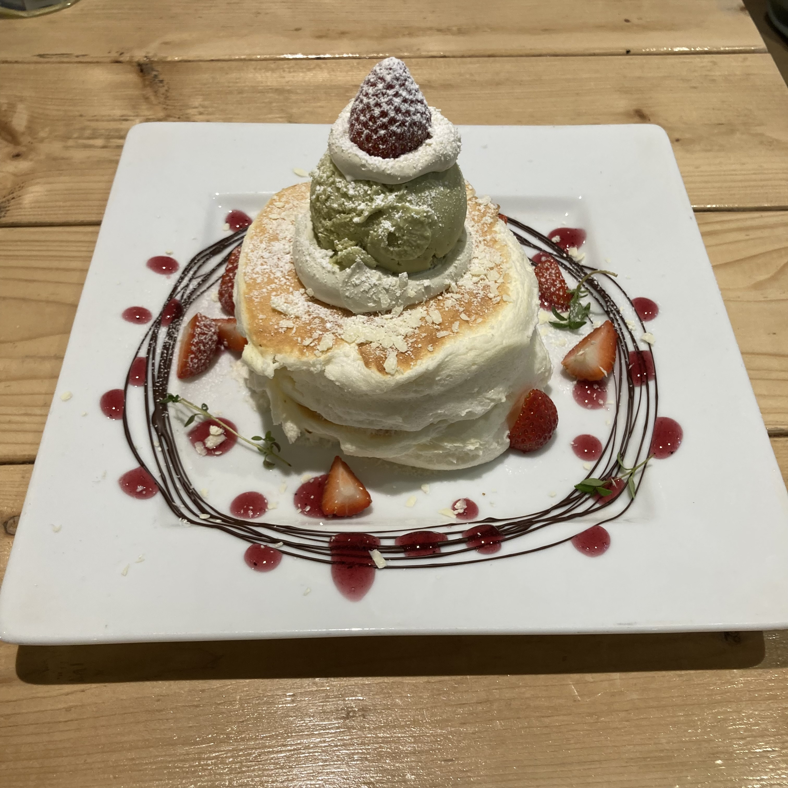
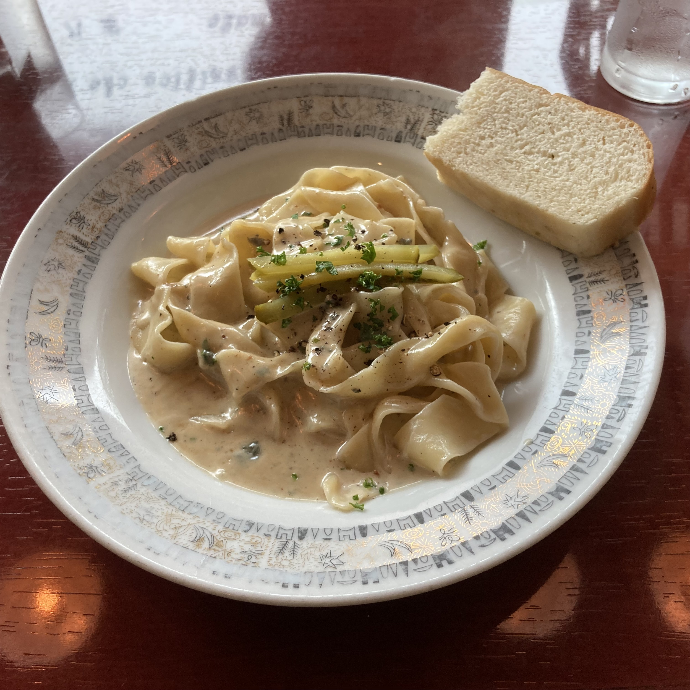

定期的に行きたくなる地元のお店を紹介します。
「パンケーキストア ロバロバ」

ふわふわのパンケーキとパスタを提供しているお店。写真のパンケーキはピスタチオアイスが乗っていて1800円くらいとおいしいが割高。パスタの価格帯が1500円であるため、これに800円で付けられるプレーンパンケーキを頼んで2000円強でランチをするのがオススメ。
ちなみにプレーンパンケーキでもケーキ自体は卵の味がしておいしいし、シュガーソースもかかるため、しっかりとデザートとして食べられる。パスタのオススメはパルミジャーノレッジャーノチーズのクリームパスタ。チーズ好きなら絶対に食べた方が良い。特にパスタが好きじゃないならステーキのランチプレートもあるがステーキのランチプレートを食べるくらいならパスタを食べた方がよっぽど得。
「レ ヴァ―ロ」

そこそこアクセスの悪いところにある超絶おいしいイタリアンレストラン。価格帯は1500円～
写真のパスタは、行くと毎回注文するゴルゴンゾーラのパスタ。チーズのクリームパスタだって言ってるのに甘みを感じるソースは、最初食べた時は衝撃だった。これが1500円っていうから、こんなに安くて逆にいいんですか！？って誰もが思うはず。ちなみにお店があるのは地元の中で金持ちが住んでいる地域。